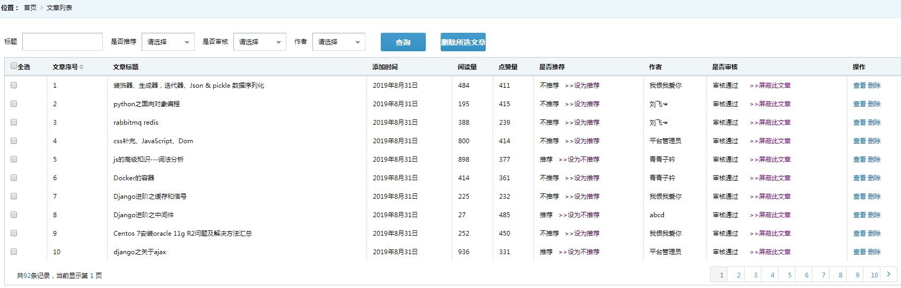

1，路由
#主页面路由
re_path('article/article_list/', article.article_list,name='article/article_list/'),
#分页面路由
re_path('article/list_part/', article.list_part,name='article/list_part/'),2，前端主页面html
#引用的js
<script src="/static/jQuery-1.8.2.min.js"></script>
#查询表单
<form id="searchlist">
{% csrf_token %}
<ul class="seachform">
<li><label>标题</label><input name="article_title" type="text" class="scinput"/></li>
<li><label>是否推荐</label>
<div class="vocation">
<select class="select3" name="article_is_recommend">
<option value="">请选择</option>
<option value="1">推荐</option>
<option value="0">不推荐</option>
</select>
</div>
</li>
<li><label>是否审核</label>
<div class="vocation">
<select class="select3" name="article_auditor">
<option value="">请选择</option>
<option value="1">未审核</option>
<option value="0">审核通过</option>
</select>
</div>
</li>
<li><label>作者</label>
<div class="vocation">
<select class="select3" name="member_id">
<option value="">请选择</option>
{% for v in member_list %}
<option value="{{ v.member_id }}">{{ v.member_name }}</option>
{% endfor %}
</select>
</div>
</li>
<li><label> </label><input name="" type="button" class="scbtn" value="查询" id="search"/></li>
<li><label> </label><input type="button" value="删除所选文章" id="del_list" class="scbtn"></li>
</ul>
</form>
#文章表
<form onsubmit="return false" id="del">
<table class="tablelist">
<thead>
<tr>
<th><input name="checkall" type="checkbox" value="" id="checkAll">全选</th>
<th>文章序号<i class="sort"><img src="/static/back/images/px.gif"/></i></th>
<th>文章标题</th>
{#
<th>文章简介</th>
#}
<th>添加时间</th>
<th>阅读量</th>
<th>点赞量</th>
<th>是否推荐</th>
<th>作者</th>
<th>是否审核</th>
<th>操作</th>
</tr>
</thead>
{% csrf_token %}
<tbody class="maina">
</tbody>
</table>
</form>3，前端主页面js。
<script>
//首次页面加载，通过ajax拿到数据，放在maina容器里
show_list();
function show_list() {
$.post("{% url 'back:article/list_part/' %}", $('#searchlist').serialize(), function (data) {
$(".maina").html(data);
});
}
//点击分页，点击a连接：
$(document).on('click', '.pagin a', function () {
$.post(this.href, $('#searchlist').serialize(), function (data) {
$(".maina").html(data);
});
return false;//让a连接失效
});
//点击删除
$(document).on('click', '.del', function () {
_this = this;
layer.confirm('您确定要删除吗？', {
btn: ['确定', '取消']
}, function () {
id = $(_this).parent().data("id");
$.post("{% url 'back:article/list_delete/' %}", {
"id": id,
"csrfmiddlewaretoken": "{{ csrf_token }}"
}, function (data) {
if (data.status == 1) {
layer.msg(data.info, function () {
$(_this).parent().parent().remove();
});
} else {
layer.msg(data.info);
}
}, 'json');
}, function () {
});
return false;//让a连接失效
});
//点击查询按钮
$(document).on('click', '#search', function () {
show_list();
});
{# 设为推荐#
}
$(document).on('click', '.recommend', function () {
__this = this;
layer.confirm('特别推荐显示前三篇文章，是否修改数据？', {
btn: ['确定', '取消']
}, function () {
vals = $(__this).data("val");
$.post("/back/article/article_is_recommend/", {
"id": vals,
"csrfmiddlewaretoken": "{{ csrf_token }}"
}, function (data) {
if (data.status == 0) {
layer.msg(data.info, function () {
});
} else {
layer.msg(data.info);
}
}, 'json');
}, function () {
});
{#return false;//让a连接失效#}
}
);
{# 审核#
}
$(document).on('click', '#go', function () {
layer.msg('点击查看文章后返回文章列表确认是否通过审核.')
});
$(document).on('click', '.auditor', function () {
__this = this;
layer.confirm('是否确认修改文章状态？', {
btn: ['确定', '取消']
}, function () {
valuse = $(__this).data("auditor");
$.post("/back/article/article_auditor/", {
"id": valuse,
"csrfmiddlewaretoken": "{{ csrf_token }}"
}, function (data) {
if (data.status == 0) {
layer.msg(data.info, function () {
});
} else {
layer.msg(data.info);
}
}, 'json');
}, function () {
});
{#return false;//让a连接失效#}
}
);
{# 批量删除#
}
{# 全选全不选#
}
$(document).on('click', 'input[name="checkall"]', function () {
$('input[name="chk[]"]').prop('checked', $('input[name="checkall"]').prop('checked'))
});
$(document).on('click', 'input[name="chk[]"]', function () {
$('input[name="checkall"]').prop('checked', !$('input[name="chk[]"]:not(:checked)').length)
});
$(document).on('click', '#del_list', function () {
layer.confirm('是否确认删除所选文章？', {
btn: ['确定', '取消']
}, function () {
$.post('/back/article/article_del/', $('#del').serialize(), function (data) {
if (data['status'] == 0) {
layer.msg(data['info'])
} else {
layer.msg(data['info'])
}
}, 'json')
})
})
</script>4，主页面后台方法。
# 文章列表
def article_list(request):
member_list = Member.objects.all()
return render(request,'article/article_list.html',locals())5，前端分页面html。
{% for v in articles_list %}
<tr>
<td><input name="chk[]" type="checkbox" value="{{ v.article_id }}"></td>
<td>{{ forloop.counter }}</td><!--编号-->
<td>{{ v.article_title }}</td>
<td>{{ v.article_addtime }}</td>
<td>{{ v.article_clicknum }}</td>
<td>{{ v.article_praise_num }}</td>
<td>
{% if v.article_is_recommend == 1 %}
推荐
<a href="javascript:;" data-val="{{ v.article_id }}" style="color: #440044;" class="recommend">
>>设为不推荐</a>
{% else %}
不推荐
<a href="javascript:;" data-val="{{ v.article_id }}" style="color: #440044;" class="recommend">
>>设为推荐</a>
{% endif %}
</td>
<td>{{ v.member.member_name }}</td>
<td>
{% if not v.article_auditor %}
审核通过
<a href="javascript:;" style="color: purple;" data-auditor="{{ v.article_id }}" class="auditor">
>>屏蔽此文章</a>
{% else %}
<a href="javascript:;" style="color: #0b2e13;" id="go">去审核</a>
<a href="javascript:;" style="color: purple;" data-auditor="{{ v.article_id }}" class="auditor">
>>通过审核</a>
{% endif %}
</td>
<td data-id="{{ v.article_id }}"><a href="/blog/single-post/{{ v.article_id }}/" class="tablelink">查看</a> <a
href="javascript:;" class="tablelink del"> 删除</a></td>
</tr>
{% endfor %}
<tr>
<td colspan="10">
<div class="pagin">
<div class="message">共<i class="blue">{{ num }}</i>条记录，当前显示第 <i
class="blue">{{ currentPage }} </i>页
</div>
<ul class="paginList">
{% if articles_list.has_previous %}
<li class="paginItem"><a
href="/back/article/list_part/?page={{ articles_list.previous_page_number }}"><span
class="pagepre"></span></a></li>
{% endif %}
{% for num in pageRange %}
<li class="paginItem {% if num == currentPage %}current{% endif %}"><a
href="/back/article/list_part/?page={{ num }}">{{ num }}</a></li>
{% endfor %}
{% if articles_list.has_next %}
<li class="paginItem"><a
href="/back/article/list_part/?page={{ articles_list.next_page_number }}"><span
class="pagenxt"></span></a></li>
{% endif %}
</ul>
</div>
</div>
</td>
</tr>6，分页面后台方法。
#用到的封装查找函数
from blog.utils import function
# 文章part
def list_part(request):
where=function.getWhere(request)
articles_list=Article.objects.filter(**where).all().order_by('-article_id')
num=len(articles_list)
currentPage=int(request.GET.get('page',1)) #获取当前在第几页
paginator=Paginator(articles_list,10)
if paginator.num_pages>11:
if currentPage-5<1:
pageRange=range(1,11)
elif currentPage+5>paginator.num_pages:
pageRange = range(currentPage-5, paginator.num_pages+1)
else:
pageRange = range(currentPage - 5,currentPage+5)
else:
pageRange = range(1,paginator.num_pages+1)
try:
articles_list=paginator.page(currentPage)
except PageNotAnInteger:
articles_list = paginator.page(1)
except EmptyPage:
articles_list = paginator.page(paginator.num_pages)
return render(request,'article/article_list_part.html',locals())7，分页面中用到的封装函数
# 文章查找
def getWhere(request):
where = dict()
article_title=request.POST.get('article_title','')
article_is_recommend = request.POST.get('article_is_recommend', '')
member_id = request.POST.get('member_id', '')
article_auditor = request.POST.get('article_auditor','')
if article_title:
where['article_title__icontains']=article_title
if article_is_recommend!='':
where['article_is_recommend'] = article_is_recommend
if member_id:
where['member'] = member_id
if article_auditor !='':
where['article_auditor'] = article_auditor
print(where)
return where8，页面效果。

done。